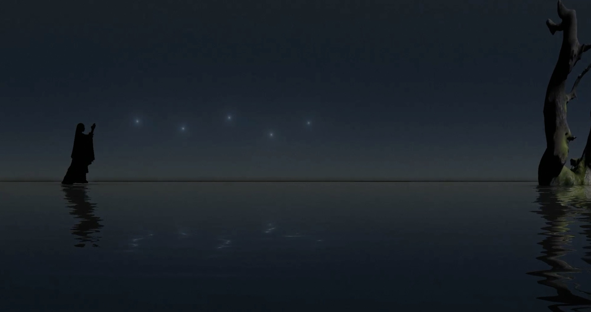
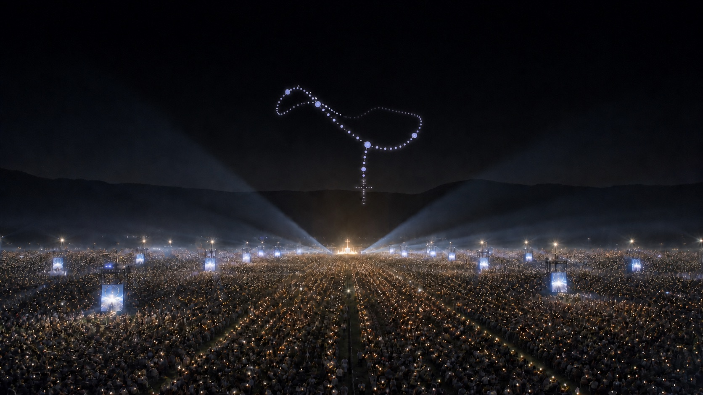

i
성경적 의미
“나와 함께 한 시간도 깨어 있을 수 없더란 말이냐.” 이집트 탈출도, 부활도 밤에 일어났습니다. 밤은 위협의 시간이자 구원이 시작되는 시간입니다.
밤바다를 건너는 묵주 — 전야 철야 묵주기도
너희는 세상에서 고난을 겪을 것이다.요한 16,33 — 수난 전야의 고별사
그러나 용기를 내어라. 내가 세상을 이겼다!
폐막 미사 전날 밤, 청년들이 가장 오래 그리고 가장 깊이 머무는 시간. 하루가 끝나고 새 하루가 시작되는 그 경계에 두 시간의 묵주기도를 놓습니다.
“나와 함께 한 시간도 깨어 있을 수 없더란 말이냐.” 이집트 탈출도, 부활도 밤에 일어났습니다. 밤은 위협의 시간이자 구원이 시작되는 시간입니다.
깨어 기도하는 청년과 침낭 속에 잠든 청년이 공존하는 밤. 묵주기도는 깨어 있는 이에게는 관상의 사다리, 잠드는 이에게는 어머니의 자장가가 됩니다.
주제 성구는 부활 후의 개선사가 아니라 수난 전야의 말씀입니다. 자정 타종과 함께 이 말씀을 선포하고, 고통을 지나 영광에 이르는 두 시간이 곧 대회 주제의 전례적 번역이 됩니다.
어둠 속 한 사람의 기도가 20만 개의 빛으로 번져 땅의 묵주가 되고, 하늘이 그 기도에 별들의 묵주로 응답합니다.


별은 바라볼 수는 있어도 만질 수 없고, 묵주알은 손가락 사이에서 하나씩 헤아릴 수 있습니다. 별이 알이 되는 순간은 강생의 형상입니다 — 헤아릴 수 없이 먼 하느님이 헤아릴 수 있는 몸으로 오신 사건.
영어 bead의 어원은 고대영어 bede, 곧 “기도”입니다. 그러므로 이 문장은 끝까지 밀고 가면 이렇게 읽힙니다 — 별이 기도가 된다.
그리스도 생애의 순서를 따라 토요일 밤에서 주일 새벽으로 건너갑니다. 구간을 눌러 기도와 연출을 확인하세요.
한 단이 완성될 때마다 무대 위 묵주 알이 한 알씩 켜집니다. 빛은 언제나 기도 뒤에 옵니다.
죽음과 부활 사이, 기도문이 없는 9분. 아드님은 무덤에 계시고 어머니 홀로 믿음의 등불을 지키신 시간.
어둠 — 바람과 물소리만. 스크린에 「바다의 별」.
별 — Ave Maris Stella 무반주 독창. 드론 별 하나가 바다 위를 걷듯 이동.
열 알 — 전체 허밍. 별 뒤로 열 개의 빛이 켜져 단을 이룹니다.
십자가 — 하늘의 묵주 완성. 정점에서 3초의 침묵.
응답 — 하늘의 빛이 군중에게 내려와 부활의 화관이 열립니다.
드론 묵주는 장관을 위한 피날레가 아니라, 땅에서 완성된 기도가 하늘에서 응답되는 짧은 표징입니다.
어떤 빛 큐도 기도문 큐보다 앞서지 않습니다. 한 단이 완성된 뒤에야 알 하나가 켜집니다.
조도와 음량은 두 시간에 걸쳐 서서히 내려갑니다. 밤의 몸을 따르는 연출입니다.
수직 빛기둥은 쓰지 않습니다. 빛은 사람들 사이를 건너가거나 하늘에서 내려와 머뭅니다.
묵주기도는 마리아와 함께 그리스도의 얼굴을 관상하는 기도다.
관상 · 기억 · 반복
교의적 좌표
결합 · 메아리 · 봉헌
성경신학적 마리아론
서사의 원천
청년의 문턱을 낮추는 실천
현존의 매체 · 시각 문화
동의(fiat)의 신학
라틴어 본문·선율, 20단 구성과 자정 배치에 대한 전례위원회 감수
노래형·낭송형·침묵형 단의 표준 시간을 합창 리허설로 검증
20단 신비 선포문·묵상구를 5개 선창 언어로
성모송 응답 선율, Ave Maris Stella·Salve Regina 편곡 데모
별에서 묵주알로의 변용 시퀀스 프리비주얼, 20단 영상 배치
안전 이격 운용과 Plan B — 취소해도 완성되는 연출